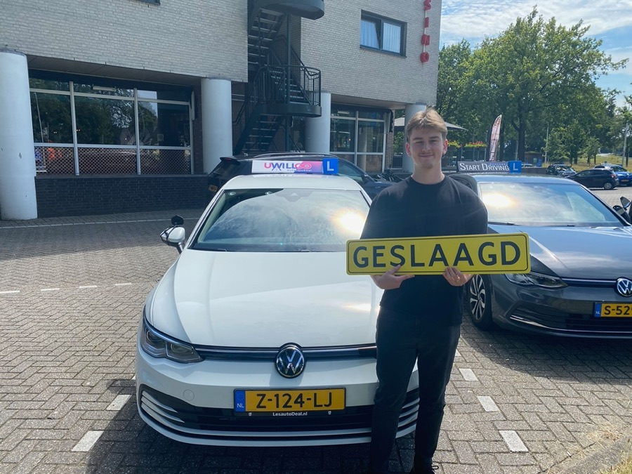

Op je gemak, elke les
Rust in de auto is stap één. Vragen stellen mag altijd, fouten maken hoort erbij. In de reviews komt het steeds terug: "vanaf de eerste les op mijn gemak".
Onze aanpak
Autorijden leer je niet onder druk. Daarom werkt Ron andersom: hij zorgt eerst dat jij je op je gemak voelt in de auto, en bouwt daarna les voor les naar je rijbewijs toe.
01 De man naast je
Ron is 41, geboren Tilburger en woont met zijn partner en hond Marley in Tilburg Zuid. Hij woonde ook een tijd in Baarle-Nassau en Hilvarenbeek, dus de wegen rond Tilburg, Goirle, Hilvarenbeek en Udenhout kent hij als zijn broekzak. Precies de wegen waar jij straks examen doet.
Waarom hij rijinstructeur werd? Omdat hij het zelf ooit doodeng vond. Ron weet nog goed hoe spannend het rijbewijs voelde, en juist ook hoeveel vrijheid het hem gaf. Dat gevoel gunt hij iedereen. Hij is opgeleid met de focus op coaching en begeleiding, en dat merk je: hij luistert eerst naar wat er bij jou speelt en past daar zijn les op aan.
In de auto is het gezellig, daar zijn alle reviews het over eens. Maar laat je niet foppen door het praatje: elke les zit doordacht in elkaar en heeft een doel uit de rijprocedure. Lachen mag, leren staat voorop. Zoals een leerling het opschreef: "Je kunt ermee lachen, maar ook goed focussen."
En buiten de lesauto? Dan vind je Ron op het volleybalveld, in het zwembad, met de hond in de bossen of ergens op een urbex-plek met zijn camera. Gewoon een Tilburger dus.
02 Zo gaat dat in de praktijk
Rust in de auto is stap één. Vragen stellen mag altijd, fouten maken hoort erbij. In de reviews komt het steeds terug: "vanaf de eerste les op mijn gemak".
Sneller of langzamer dan een ander, het maakt niks uit. Het is geen wedstrijd. Jij gaat pas op examen als jij er echt klaar voor bent.
Ron legt rustig uit, doet voor waar nodig en herhaalt zonder zuchten. En hij houdt je ouders aangehaakt als je dat fijn vindt. Moeder Rina noemt de communicatie in haar review als het grote pluspunt.
Je leert niet alleen handelingen maar ook snappen wáárom je iets doet. Zo blijf je ook ná je examen een veilige, zelfstandige bestuurder.
03 Vind je rijden spannend?
Een flink deel van Rons leerlingen begon met knikkende knieën. Sommigen na een nare ervaring bij een andere rijschool, anderen omdat autorijden ze gewoon niks leek.
"Ik had eerder een proefles bij een andere rijschool gehad, waardoor ik een tijd niet meer durfde te beginnen. Via via hoorde ik over Ron. Dat bleek de beste keuze. Dankzij zijn begeleiding heb ik het plezier in autorijden gevonden."
"Ik ben 53 en geef niks om autorijden. Als je zo iemand kunt laten slagen, dan ben je echt een topinstructeur!"
Bij UWillGO is iedereen welkom. Wie je ook bent, waar je ook vandaan komt.
05 De lesauto
Een handgeschakelde 6-bak met alles erop en eraan. Comfortabel zitten leert net wat fijner: de ERGO-stoelen zijn verwarmd en hebben zelfs een massagefunctie.

Alle rijhulpsystemen zijn er om je te ondersteunen. Sturen, kijken en beslissen leer je gewoon zelf.
06 Theorie
Vanaf je zestiende mag je theorie-examen doen. Bij UWillGO kies je hoe je leert, en wat je in de theorie leert komt meteen terug in je praktijklessen.
Leren in je eigen tempo met uitlegvideo's, verkeerssituaties in beeld en oefenexamens in de On My Way LeerlingApp. Overal en altijd, ook tussen je lessen door.
Twee avonden van twee uur in een kleine groep van 2 tot 6 personen. Vragen stellen wanneer je wilt. Veel leerlingen combineren de app met een klassikale avond.
Plan een gratis proefles van 60 minuten en ervaar zelf hoe Rons aanpak voelt. Grote kans dat het klikt: het bleef nog nooit bij één les.